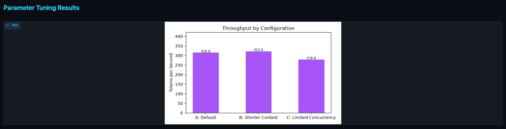
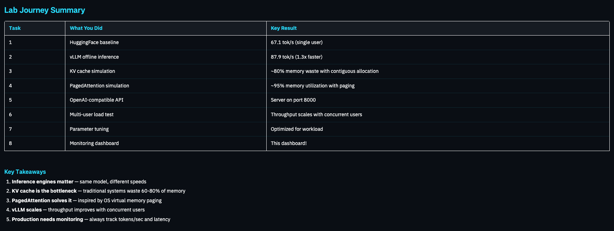

Demo · Task 8


Tuning panel: every configuration change, benchmarked before it ships.
Journey table: the eight tasks and their key results in one place.
Two numbers to keep on a screen for any LLM service:
Tokens per second
how much work the GPU is doing
Latency per request
what each user actually feels
Deploying Custom LLMs with vLLM · PyCon Africa 2026
19